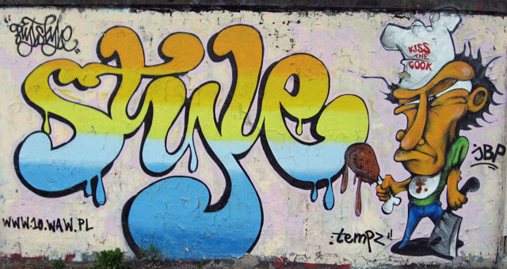
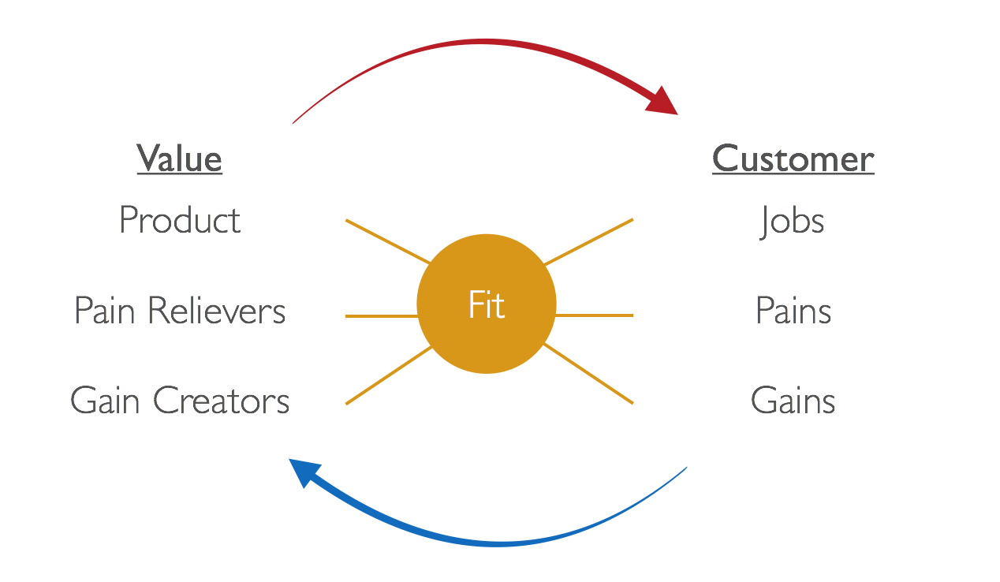
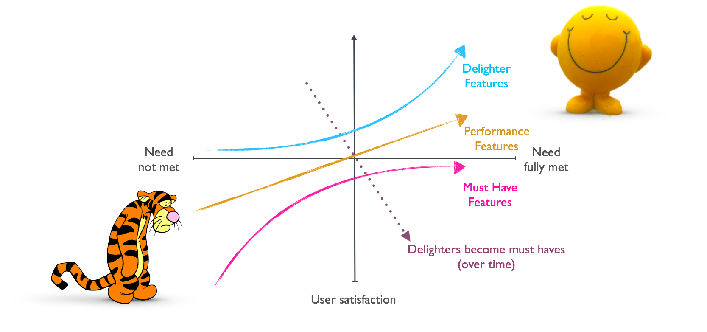
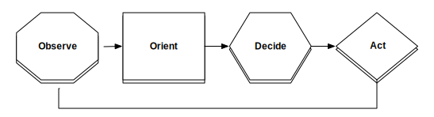

Chef Style DevOps Kung Fu
Adam Jacob / CTO of Chef / @adamhjk

Chef Style DevOps Kung fu by Chef Software, Inc. is licensed under a Creative Commons Attribution-ShareAlike 4.0 International License. A full list of incorporated sources is included.
Navigate using the left and right arrows.
Gōngfu (功夫)
- 功 (gōng) meaning "work", "achievement", or "merit"
- 夫 (fū) often treated as being a word for "man"
The excellence achieved through long practice in one's skills
SourceWushu (武术)
- Basics
- Forms
- Application
Devops Kung fu
- A deep well of practical philosophy
- Broad experience, unique to each individual
- Recognizable by the basics and forms
- Practically applied to the situations in your life
DevOps is reinventing how we run our businesses
Who practices it?
Everyone
- The application will be different, but the principles hold
- We are not generalists - we are well connected specialists
Chef Style DevOps Kung fu
| Mark Burgess | Johnny Cash | John Allspaw | Sammy Hagar |
| Nathan Haneysmith | Ronnie James Dio | Tom Thomas | Jesse Leach |
| Christopher Brown | Ben Rockwood | Jesse Robbins | Jez Humble |
| Barry Crist | Thich Naht Hanh | Mitch Hill | Larry Wall |
| Paul Edelhertz | Lao Tzu | Soo Choi | Jennifer Dumas |
| Alex Ethier | Yukihiro Matsumoto | Jeff Hackert | Theo Schlossnagle |
Foundational Document
- On Github: http://github.com/chef/devops-kungfu
- Join by PR
- We work together to develop our principles, forms, and applications
- Start your own school by forking, removing the names, and changing the content
Elements of DevOps
| Principles | (Universal) |
| Forms | (Shared) |
| Application | (Unique) |
Principles
Universally held beliefs; the foundation of all DevOps stylesDevOps
A cultural and professional movement, focused on how we build and operate high velocity organizations, born from the experiences of its practitioners.
Cultural and professional
- Cultural like Hip Hop, Heavy Metal, or Otaku
- Professional like an MC, Lead Guitarist, or Animator
DevOps: A cultural and professional movement, focused on how we build and operate high velocity organizations, born from the experiences of its practitioners.
Focused on how we build and operate
- Encompasses the details of how we build things
- And how we operate them over time
DevOps: A cultural and professional movement, focused on how we build and operate high velocity organizations, born from the experiences of its practitioners.
High velocity organizations
- Our experiences were in building high velocity organizations
- The same principles applied to low velocity organizations bring instability
DevOps: A cultural and professional movement, focused on how we build and operate high velocity organizations, born from the experiences of its practitioners.
Born from the experiences of its practitioners
- Most of whom were web innovators
- The first explorers of DevOps
DevOps: A cultural and professional movement, focused on how we build and operate high velocity organizations, born from the experiences of its practitioners.
Design for the safety, contentment, knowledge and freedom of both your peers and your customers.
Safety
- Human safety
- Information safety
- The ability for individuals to act without fear of unintended consequences
Contentment
Contentment is about being satisfied with what you have.
Happiness is not a goal – it’s a by-product of a life well lived
- Eleanor Roosevelt
Knowledge
Access to knowledge is a leading indicator of social progress.
The goal isn’t to minimize needed knowledge – it's to provide access to the wealth of it, when we need it.
The power or right to act, speak, or think as one wants without hindrance or restraint.
– The Internet
We should be empowering ourselves and others to act, speak, and think as they need to with less hindrance.
People
Products
Companies
We are Lean
- Eliminate non-value-added action (Waste/Muda)
- Pull over Push
- Kaizen (Continuous Improvement)
- Kaikaku (Disruptive Change)
- Small Batch + Experimentation
Ubiquitous Workflow Automation
Diversity
Forms
Shared between many styles; emphasis varies from style to style- Make it public
- Shoot for one sentence
- Include the people you are trying to help
- Include your product
- Include the change the people you are helping will see
The most enduring and transformative companies use Chef to become fast, efficient, and innovative software driven organizations
- What brings about good outcomes in your environment
- Write them down, make them public
- Include the principles of DevOps
- Mix in the things that are unique to your industry/problem
We build software for our users; we do what is right for them.
(The Right Hard Thing)
Empowered teams
- Permission to act
- Paired with the context to make good decisions
- With leaders who care about your purpose
- And share your beliefs
Form diverse bonds
- Take people to lunch, or have meetings, with people outside your specialty
- Ask them what they do, and try and understand their problems and perspective
- Legal, Finance, Sales, Marketing, Business Development, Software Development, Systems Administrators, Security Professionals, Product
Build consensus on important decisions
- Use your bonds to circulate plans with stakeholders
- Incorporate their criticism and feedback into the plan
- Present to the group
- Ask for consensus
Strong value propositions
- Pain Killers, not vitamins
- Make something people ♡
- Needs not wants (one customer wants a feature; many customers need a feature)
Build a roadmap
- Start with your vision
- Align with customer feedback
- Balance innovation with customer needs
- Group them into themes, with an outcome for each
- Distill those into features, and validate with customers
- Your THEMES should hold
- Your OUTCOMES might hold
- Your FEATURES will change
Always have delighters
| 1 | 2 | 3 | |
|---|---|---|---|
| Paint the Mona Lisa Incremental |
|||
| Woman in pastoral setting Iterative |
Awesome analogy from Jeff Patton
Manage Risk
- Small batches, near term hypothesis
- Validation comes from customers
- Introduce near-term volatility to gain decreased long-term risk
Do not worry about scale
Until you should
Way later than you think
- Weekly
- Anyone with anything to show
- Invite everyone
- Record it and post it internally
Choose languages and tools that fit the job
- We are all polyglots
- Learning new languages and tools is one of the great joys of our industry
- Small batch + iterative development protects you from risk
Have a bug database
- Triage and prioritize the bugs
- Be nice to your customers
Continuous Integration
- Always integrate branches to master
- They should be short lived, iterative branches
- Fix the build when it goes red.
The four-eye rule
Write tests
- Unit test (a single function)
- Integration tests (multiple classes/units)
- Functional tests (user-oriented, high level, full stack)
- Smoke tests (quickly determine if the system is "working")
One path for change
- The way change moves through your organization is fixed
- Designed to re-enforce your principles and aid flow
- Flexible at the level of execution
Code goes through the same workflow
- Applications are code
- Infrastructure is code
Focus on Availability
- Availability = uptime/(uptime+downtime)
- Focus your efforts on reducing mean time to diagnose and mean time to repair
- Failure is inevitable; it's how you detect and react that matter most
Collect metrics
- From the operating system, network, applications, and your process
- High resolution matters
- Have as few systems as possible
Plan for capacity
- Identify key metrics
- Put them on a graph
- Set a limit
- Plot a trend line
- Expand your time horizon
Only alert on what is actionable
- Get the attention of the right humans
- As few alerts as possible
- Routed to the people who can take action
- Start with the is it up alert
Practice incident response
- Orient is the step that matters most
Practice incident response
- The First Responder is the default Incident Commander
- Decides what to do next
- Coordinates resources
- Communicates status
- Not about rank
- There is only ONE Incident Commander.
Incidents lead to Post Mortems
- Invoke the space: we are here to learn, not to blame
- Describe the incident
- Establish the timeline
- Identify contributing factors
- Describe customer impact
- Describe remediation tasks
- Describe improvement tasks for response process
Use scalable systems design
- Autonomous actors, responsible for themselves
- Making progress toward their goal
- Making clear promises to other actors
- Having those actors evaluate the quality of those promises
- About your code
- About your position
- About your knowledge
Simplicity
Extensibility
Re-use
Safety in technique
- Remember your principles
- Practice your forms
- Use your discernment
Stage 1 - Problem Selection
- Small enough to have a meaningful iteration in 8 weeks
- Vertical not Horizontal
Stage 2 - Purpose, Beliefs and Teams
- Write down your purpose
- Write down your beliefs
- Empower the team to act
- Be available for context
Stage 3 - Product Development
- Write down your value proposition
- Build a roadmap (Themes, Outcomes, Features)
- Include delighters
- Simplicity, Extensibility, Re-use
Stage 4 - Iterate on Features
- Iterate on features
- Manage risk through small batches, validated with customers
- Choose languages and tools that fit the job
- Ignore scale
- When arguing about theory, re-focus on execution
- Demo every week
Stage 4 - Iterate on Features
- Use source control
- Have a bug database
- One workflow for change
- Four eyes
Stage 4 - Iterate on Features
- Continuous Integration
- Continuous Delivery
- One test at a time (Unit, Integration, Functional, Smoke)
- Use scalable systems design
Stage 5 - Operate
- Focus on availability
- Collect metrics
- Plan for capacity
- Alert on what is actionable
- Run incident response
- Hold post mortems
Stage 6 - Deliver
- Final demo
- Retrospective
Chef Style DevOps Kung Fu
- On Github: http://github.com/chef/devops-kungfu
- Join by PR
- We work together to develop our principles, forms, and applications
- Start your own school by forking, removing the names, and changing the content
Find your own way
- DevOps is real
- I know it by its universal principles
- I practice it by its shared forms
- I apply it to my daily work
- My practice is unique - and so is yours